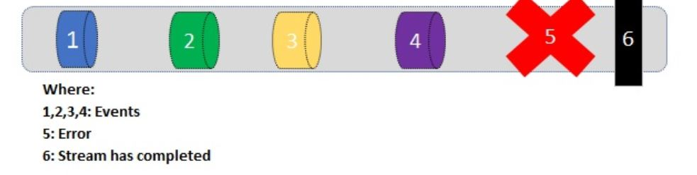
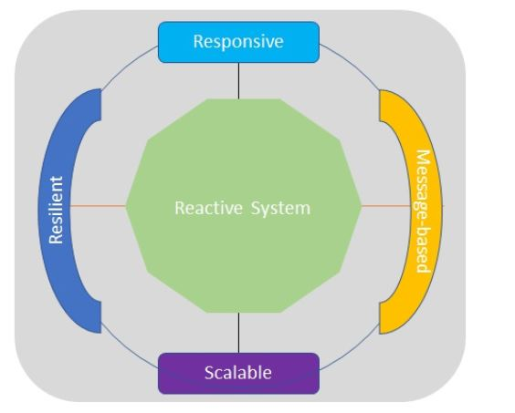
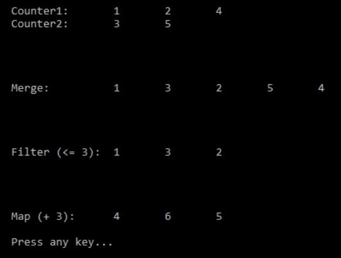
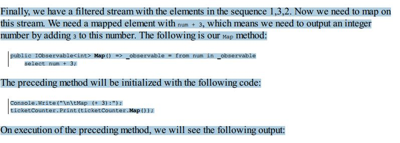

Reactive Programming Patterns and Techniques
In the previous chapter (Chapter 9, Functional Programming Practices), we delved into functional
programming and learned about Func, Predicate, LINQ, Lambda, anonymous functions, expression trees, and recursion. We also looked at the implementation of the strategy pattern using
functional programming.
This chapter will explore the use of reactive programming and provides a hands-on demonstration of
reactive programming using the C# language. We will delve into the principles and models of
reactive programming and discuss the IObservable and IObserver providers.
The inventory application will be expanded in two main ways: by reacting to changes and by
discussing the Model-View-ViewModel (MVVM) pattern.
The following topics will be covered in this chapter:
- The principles of reactive programming
- Reactive and IObservable
- Reactive extensions—.NET Rx Extensions
- Inventory application use case—getting inventory with a filter, paging, and sorting
- Patterns and practices – MVVM
The principles of reactive programming
- One stream can be the input for another stream.
- Multiple streams can be the input for another stream.
- Streams can be merged.
- Data values can be mapped from one stream to another.
- Streams can be filtered with the data/events that you need. 
On the basis of the reactive manifesto, we can conclude that reactive systems are as follows:
- Responsive: Reactive systems are event-based design systems; these systems are quick to respond to any request in a short amount of time.
- Scalable: Reactive systems are reactive in nature. These systems can react to changing the scalability rate by expanding or reducing the allocated resources.
- Resilient: A resilient system is one that will not stop even if there is a failure/exception. Reactive systems are designed in such a way so that in any exception or failure, the system will never die; it remains working.
- Message-based: Any data item represents a message that can be sent to a specific destination. When a message or data item has arrived at a given state, an event emits a signal to notify the subscribers that a message has reached. Reactive systems rely on this message passing.   